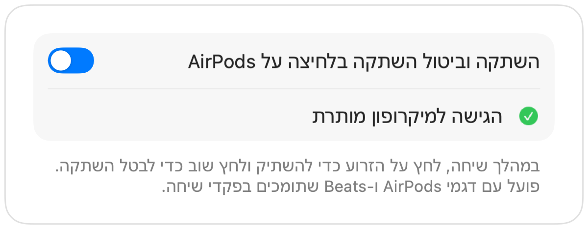

השתקת AirPods לא עובדת ב-Mac? הנה הפתרון
מערכת macOS מאפשרת להשתיק שיחה בלחיצה על זרוע ה-AirPods, אך רק אם אפליקציית שיחת הווידאו תומכת בכך. אפליקציות רבות אינן תומכות, כולל Chrome ושיחות ועידת וידאו בדפדפן. אתה לוחץ על האוזניות, שומע צליל שגיאה קצר, רואה הודעה בנוסח “Cannot Control Mic”, והמשתתפים בשיחה ממשיכים לשמוע אותך.
Muffle מוסיף את התמיכה הזו לכל אפליקציה. הוא מקבל את הלחיצה, משתיק את מיקרופון ה-Mac ומשמיע את צליל ההשתקה הרגיל.
איך לגרום ללחיצה על AirPods להשתיק כל אפליקציה
- 1
התקן את Muffle ואפשר גישה למיקרופון. macOS מעביר לחיצות רק לאפליקציות שיכולות להשתמש במיקרופון.
- 2
ודא שהאפשרות “השתקה וביטול השתקה בלחיצה על AirPods” מופעלת בהגדרות Muffle.
- 3
הצטרף לשיחה. הלחיצה משתיקה רק בזמן שאפליקציה כלשהי משתמשת במיקרופון.
- 4
לחץ על הזרוע פעם אחת כדי להשתיק ופעם נוספת כדי לבטל השתקה.

- מחוץ לשיחות, הלחיצה ממשיכה להפעיל ולהשהות מוזיקה כרגיל.
- אם האוזניות שלך מוגדרות ללחיצה שונה עבור פקדי שיחה, בדוק את הגדרות ה-AirPods שלך בתוך הגדרות המערכת.
שאלות נפוצות
למה ה-Mac משמיע צליל שגיאה כשאני לוחץ על ה-AirPods?
האפליקציה שבה מתנהלת השיחה אינה תומכת בלחיצת השתקה של AirPods, ולכן macOS דוחה אותה. כש-Muffle פועל, הלחיצה משתיקה את המיקרופון שלך במקום זאת.
אילו דגמי AirPods תומכים בלחיצה להשתקה?
דגמי AirPods Pro, דגמי AirPods 3 ואילך, ו-AirPods Max, וכן דגמי Beats שתומכים בפקדי שיחה.